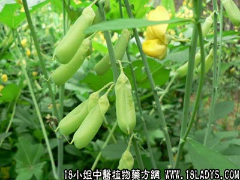

别名：通心蓉、通心菜、散心蓉。
植物名：凸尖野百合。
生长环境：本品为粗壮、亚灌木状草本。生于市郊旷地。
分布：我国南部。
入药部分：叶、茎。
采集期：夏、秋。
自采地点：家种。
性味：性微凉、味淡。
功能：利水、消水肿、散瘀、去痰火。
主治、用量和用法：1、热咳：干用5钱至1两，清水煎服，或加猪瘦肉同煎；2、吐血：用法同上；3、痰火核：用法同上’4、水肿，配伍用。
验方1：（治水肿方）虚肿：自消蓉1两、花生2两、眉豆2两、清水五碗，煎成一碗，服食。
（方解）自消蓉利水消肿、配伍花生眉豆，补益营养，对治疗虚肿，效果良好。
（方歌）治疗虚肿自消蓉，花生眉豆共协同，五碗清泉煲服食，利水消肿力最雄。
实肿：自消蓉5钱、樟柳头5钱、鹰不泊5钱、清水三碗，煎成一碗服。
（方解）自消蓉利水去浮肿，佐以樟柳头、利水之力更大，鹰不泊清热，合为清热祛湿消肿剂，对实肿疗效良好。
（方歌）如属实肿应改制，消蓉不泊柳头从，清泉三碗煎水饮，清热祛湿力维隆。
验方2：（治苦伤咳嗽吐血方）自消蓉5钱、红菱根5钱、蚌花2钱、东风桔5钱、白簕根5钱、清水三碗煎成一碗服。
（方解）本方以自消蓉散瘀、白簕根、蚌花化气止血，红菱根清肝热，东风桔清骨火，疏肝肺风热，合为治疗苦伤吐血，潮热骨蒸之有效方剂。
（方歌）消蓉散瘀除痰火，红菱白簕蚌花伙，清热还加东风桔，疗伤止血收效果。
本文解释权归中药大全，本文地址： https://www.daquan.com/post/1754.html